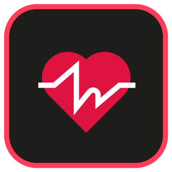
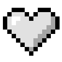
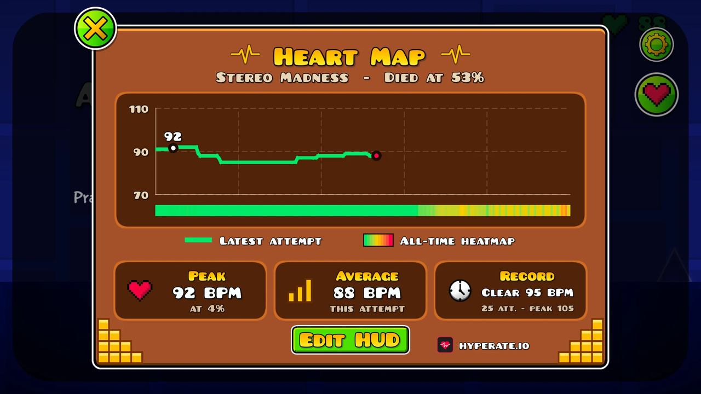

The official HypeRate mod puts your live heart rate into Geometry Dash and shows you exactly where in a level you start to panic.
Free · Windows, macOS, Android & iOS · Needs Geode
A little heart in the corner pulses at your real heart rate and turns from green to yellow to red as things get tense.

Everybody's heart is different. While you play, the mod learns your normal heart rate and sets green, yellow and red around it – whether you usually sit at 70 or at 110.
Right now: calm
Every attempt is recorded against your progress through the level. After a few runs you can literally see which part gets to you.

Everything you need to see what your heart is up to – and nothing you don't.
Enter your HypeRate ID and your pulse shows up in every level. Works with most smartwatches, fitness bands and chest straps.
Your pulse from 0 to 100% for every attempt, with peak, average and an all-time heatmap of the level.
Your best run, your highest heart rate and your calmest clear – remembered for every level you play.
Set a heart rate limit. Go over it and you die. It only ever makes the game harder, never easier.
Drag the display anywhere, change its size and opacity, and pick one of four heart styles.
The mod only receives your heart rate. Nothing about your gameplay leaves your device.
Takes about two minutes. You need Geometry Dash with the Geode mod loader.
Install the HypeRate app, connect your watch or strap and copy your HypeRate ID.
Download hyperate.gdhyperate.geode. In Geometry Dash open Geode → Settings → Install from file and pick the file. Geode shows a short warning for files from outside its mod list – that's normal.
Open the mod settings, paste your ID and press Apply. The status line turns green once your heart rate comes in. Done!
No. Anything that works with the HypeRate app works here – most smartwatches, fitness bands and chest straps. No sensor at hand? Turn on Demo Mode in the mod settings and try everything with a simulated heart rate.
Yes, the mod is free. You just need a HypeRate account for your heart rate.
The mod checks for new versions when you start the game and tells you in the main menu. One click takes you to the download.
We built this mod with a lot of help from AI tools, and the Geode mod list doesn't accept mods made that way. So we publish it here instead. We tested everything ourselves and keep maintaining it.
Never. The display is just information, and Ice Cold Mode can only make you die more often.